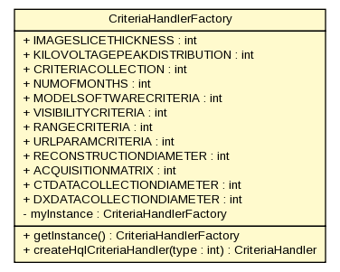

gov.nih.nci.ncia.criteriahandler
Class CriteriaHandlerFactory

java.lang.Object
 gov.nih.nci.ncia.criteriahandler.CriteriaHandlerFactory
gov.nih.nci.ncia.criteriahandler.CriteriaHandlerFactory
public class CriteriaHandlerFactory
- extends java.lang.Object
| Methods inherited from class java.lang.Object |
clone, equals, finalize, getClass, hashCode, notify, notifyAll, toString, wait, wait, wait |
IMAGESLICETHICKNESS
public static final int IMAGESLICETHICKNESS
- See Also:
- Constant Field Values
KILOVOLTAGEPEAKDISTRIBUTION
public static final int KILOVOLTAGEPEAKDISTRIBUTION
- See Also:
- Constant Field Values
CRITERIACOLLECTION
public static final int CRITERIACOLLECTION
- See Also:
- Constant Field Values
NUMOFMONTHS
public static final int NUMOFMONTHS
- See Also:
- Constant Field Values
MODELSOFTWARECRITERIA
public static final int MODELSOFTWARECRITERIA
- See Also:
- Constant Field Values
VISIBILITYCRITERIA
public static final int VISIBILITYCRITERIA
- See Also:
- Constant Field Values
RANGECRITERIA
public static final int RANGECRITERIA
- See Also:
- Constant Field Values
URLPARAMCRITERIA
public static final int URLPARAMCRITERIA
- See Also:
- Constant Field Values
RECONSTRUCTIONDIAMETER
public static final int RECONSTRUCTIONDIAMETER
- See Also:
- Constant Field Values
ACQUISITIONMATRIX
public static final int ACQUISITIONMATRIX
- See Also:
- Constant Field Values
CTDATACOLLECTIONDIAMETER
public static final int CTDATACOLLECTIONDIAMETER
- See Also:
- Constant Field Values
DXDATACOLLECTIONDIAMETER
public static final int DXDATACOLLECTIONDIAMETER
- See Also:
- Constant Field Values
myInstance
private static CriteriaHandlerFactory myInstance
CriteriaHandlerFactory
public CriteriaHandlerFactory()
getInstance
public static CriteriaHandlerFactory getInstance()
createHqlCriteriaHandler
public CriteriaHandler createHqlCriteriaHandler(int type)
throws java.lang.Exception
- Throws:
java.lang.Exception